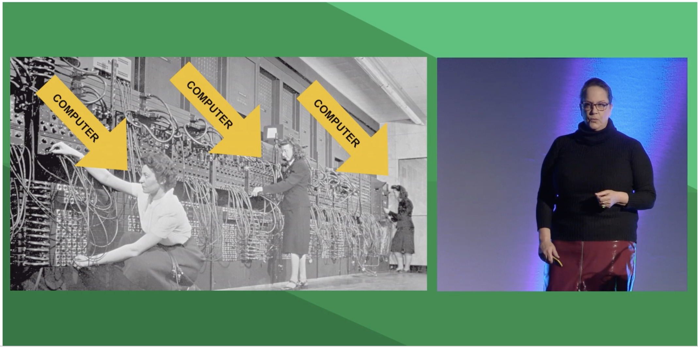

Talks
Modernizing Home & Health using AR/VR, Serverless and IoT
Browser-based 3D augmented reality and VR applications.
Amazon Polly and Amazon Lex for text to speech
Fresh perspectives on diversity & inclusivity in tech
"What's it like to be a Male game designer?"
"Until the early 70s IBM referred to programming as 'Girl's hours'"
Grace hope - helped write cobol and Margaret Hamilton literally wrote the code that put men on the moon
Developing Doom. Programming Principles from the early days of ID Software
"Try to code transparently - tell your lead how you are going to solve your current task and get feedback/advice"
"Every Developer is different and writes code differently, it's the output that matters"
"Write your code for this game only, not for a future game - You'll be writing new code later because you'll be smarter!"
"As soon as you see a bug, fix it and move on otherwise your code will be built on a buggy codebase and an unstable foundation"
"Keep your code absolutely simple. Keep looking at your functions and figure out how you can simplify further"
"No prototypes. Just make the game and polish as you go. Don't depend on polishing later, always maintain constantly shippable code"
"We are our own best testing team and should never allow anyone else to experience bugs or see the game crash. Don't waste others' time. Test thoroughly becfore checking in your code"
"Encapsulate functionality to ensure game design consistency. This minimizes mistakes and saves design time"
Real Time Processing using Lambda and Kinesis
Services 1.5 million vehicles - 1 message every 30 seconds
Performance tuning use case - more powerful lambda = more expensive, but you only pay for what you use and it’s quicker. Good trade off!